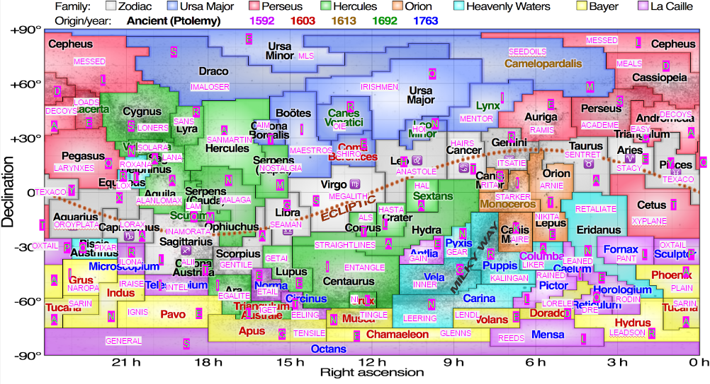

Written by Lewis Chen and Jon Schneider
First, solve the clues. To aid solvers, the answers are in alphabetical order, and enumerations are provided. The fact that there are 88 clues, combined with the allusions to stars, both in the title and the flavortext, suggest that we want to assign each word to the constellations.
The words "neighbor" and "scramble" suggest that we want to look at what constellations border each other, and attempt to use anagrams somehow. Perhaps one thing that you may observe is that there is exactly one 2-letter word and one 13-letter word. If you look on a constellation map, you may find out that Crux borders precisely 2 other constellations (and is the only one of its kind) and Hydra borders 13. So this suggests that we also want to assign letters to each constellation, such that the anagram of all of the letters from the neighbors results in the word.
After that this becomes a logic puzzle of sorts. Convenient break-ins include noting that there is only one C in the grid, and in particular it must be Triangulum as its neighbors have 5, 6, 6, and 7 neighbors. Additionally, you can use the distributions of the lengths of words containing X to suggest that Aquarius contains the only X. Furthermore, if you make a mistake, it’s very likely that you’ll run into a contradiction quickly due to the fact that there are a large number of constraints. (Each square is on average checked by around 6 constraints.) Some things to note:
The completed grid looks something like the following:
(Image credits to Wikipedia)
The cluephrase can be read off by reading the letters of the Zodiac constellations in order from Aries to Pisces (this appears backwards on the modern constellation map due to historical reasons), to get EARTH’S GALAXY, which is the MILKY WAY. (Funnily enough it’s also printed on this constellation map.)
| Clue | Answer | Constellation | Letter |
|---|---|---|---|
| University life (7) | ACADEME | Perseus | S |
| Old chat program (3) | AIM | Corona Borealis | T |
| River of Leeds (4) | AIRE | Canis Major | K |
| Folk music archivist who recorded Sounds of the South (4 5) | ALAN LOMAX | Aquila | A |
| Et ____ (4) | ALII | Corona Austrina | T |
| The Ice Bucket Challenge raised awareness of this (3) | ALS | Corvus | T |
| Alexander the Great's hairstyle (8) | ANASTOLE | Leo | H |
| Nickname for The Governator (5) | ARNIE | Orion | T |
| Fakes (6) | DECOYS | Andromeda | A |
| Producer of 2001, familiarly (3) | DRE | Reticulum | O |
| Simple (4) | EASY | Triangulum | C |
| Fishing for morays (6) | EELING | Circinus | T |
| Part of France's motto (7) | EGALITE | Ara | I |
| Get caught up (8) | ENTANGLE | Centaurus | I |
| Online shopping (5) | ETAIL | Norma | E |
| Profit (4) | GAIN | Antlia | E |
| It turns and has teeth all around (4) | GEAR | Pyxis | N |
| Not specific (7) | GENERAL | Octans | S |
| Non-Jewish (7) | GENTILE | Scorpius | A |
| Live stage performance held during the Ghost Festival (5) | GETAI | Lupus | E |
| Beck and Close (6) | GLENNS | Chamaeleon | E |
| They're sometimes split (5) | HAIRS | Cancer | T |
| Antagonist of 2001 (3) | HAL | Sextans | A |
| "___ la vista, baby!" (5) | HASTA | Crater | L |
| ___ polloi (3) | HOI | Leo Minor | N |
| "Now ___ it!" (1 3) | I GET | Triangulum Australe | L |
| Roman fire (5) | IGNIS | Pavo | E |
| Massey of Love Happy (5) | ILONA | Microscopium | R |
| What you might say when you go 0-1? (1'1 1 5) | I'M A LOSER | Draco | S |
| Girlfriend (9) | INAMORATA | Sagittarius | L |
| Kind of tube (5) | INNER | Vela | G |
| Chip maker (5) | INTEL | Telescopium | I |
| Poker call (1 5) | I RAISE | Indus | N |
| Dubliners (8) | IRISHMEN | Ursa Major | O |
| What you might say when you go 1-1? (2'1 1 3) | IT'S A TIE | Gemini | R |
| Relating to a kingdom Ashoka the Great fought (8) | KALINGAN | Puppis | R |
| Run from the law (3) | LAM | Scutum | O |
| First name of Superman's girlfriend (4) | LANA | Sagitta | A |
| Voice boxes (8) | LARYNXES | Pegasus | O |
| Flirts with, unintentionally (5 2) | LEADS ON | Hydrus | R |
| Was biased (6) | LEANED | Caelum | I |
| Looking badly? (7) | LEERING | Carina | N |
| Winner of the 1984 French open (5) | LENDL | Volans | E |
| Active Facebook user, perhaps (5) | LIKER | Columba | A |
| Opposite of saves (5) | LOADS | Lacerta | E |
| Antisocial people (6) | LONERS | Cygnus | S |
| Creature who lives in a forest of Truffula trees (5) | LORAX | Capricornus | A |
| Legendary German siren (7) | LORELEI | Dorado | D |
| Bagel topping (3) | LOX | Equuleus | R |
| Figures at an orchestra (8) | MAESTROS | Bootes | I |
| Birthplace of Picasso (6) | MALAGA | Ophiuchus | N |
| Breakfast, lunch, and dinner (5) | MEALS | Cassiopeia | D |
| Any of the stones in Stonehenge (8) | MEGALITH | Virgo | S |
| Socrates, to Plato (6) | MENTOR | Lynx | I |
| Botched, with "up" (6) | MESSED | Cepheus | L |
| Org. with Fire and Earthquakes (3) | MLS | Ursa Minor | E |
| Buddhist sage who is the namesake of a Colorado university (6) | NAROPA | Grus | I |
| Word said by some knights (2) | NI | Crux | L |
| Assassin in a 1990 French film (6) | NIKITA | Lepus | E |
| Pining for the past (9) | NOSTALGIA | Serpens | M |
| Nice bird? (3) | OIE | Canes Venatici | R |
| Montana state motto (3 1 5) | ORO Y PLATA | Aquarius | X |
| Common meat in Jamaican cuisine (6) | OXTAIL | Sculptor | P |
| Breathe quickly (4) | PANT | Fornax | L |
| Creator of Up and Inside Out (5) | PIXAR | Piscis Austrinus | O |
| Bagel variety (5) | PLAIN | Phoenix | A |
| Poured (6) | RAINED | Pictor | L |
| Groundhog Day director (5) | RAMIS | Auriga | E |
| Jojen and Meera, from Game of Thrones (5) | REEDS | Mensa | L |
| Return in kind (9) | RETALIATE | Eridanus | N |
| Lovely girl in a Beatles song (4) | RITA | Canis Minor | S |
| "The Thinker" thinker-upper (5) | RODIN | Horologium | E |
| Wife of Alexander the Great (6) | ROXANA | Delphinus | L |
| National hero of Argentina (3 6) | SAN MARTIN | Hercules | A |
| Comic ___ (4) | SANS | Lyra | R |
| Deadly nerve gas (5) | SARIN | Tucana | A |
| Tar or salt? (6) | SEAMAN | Libra | G |
| Extracts from sunflowers or sesame, but not olives or peanuts (4 4) | SEED OILS | Camelopardalis | M |
| Pokémon with a Tanooki tail (7) | SENTRET | Taurus | A |
| Protagonist of Voltron: Legendary Defender (5) | SHIRO | Coma Berenices | E |
| Toyota mid-size coupe model (6) | SOLARA | Vulpecula | N |
| Last name of Spiderman's girlfriend (5) | STACY | Aries | E |
| More bare in appearance (7) | STARKER | Monoceros | I |
| Shortest paths between pairs of points (8 5) | STRAIGHT LINES | Hydra | A |
| Type of strength (7) | TENSILE | Apus | G |
| Oil company with a star logo (6) | TEXACO | Pisces | Y |
| A slight buzz (6) | TINGLE | Musca | N |
| Set of vectors perpendicular to the Z-axis (2-5) | XY-PLANE | Cetus | T |
Author's Notes
Special thanks to Jon Schneider, who wrote code to generate crossword-grade solutions (as well as writing many of the clues), and Brian Chen, who found the borders of the constellations in a nice raw data format.
{kind=link}
{kind=link}